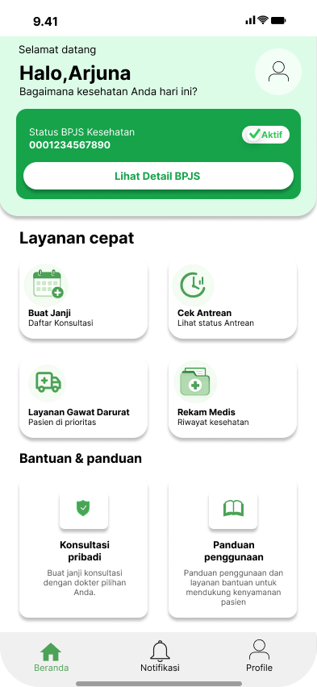
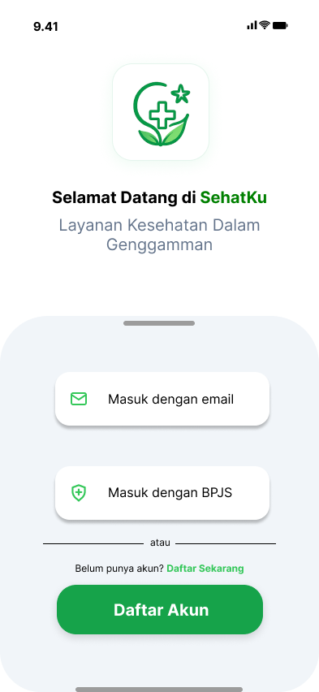
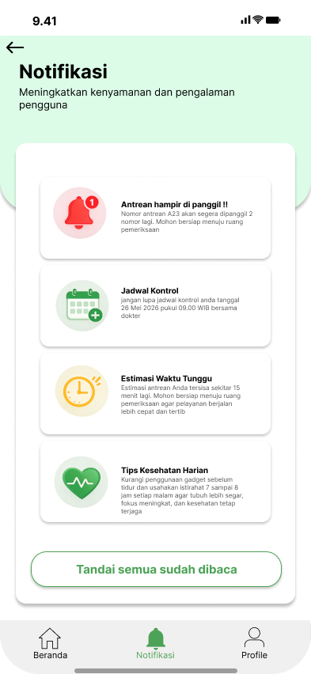
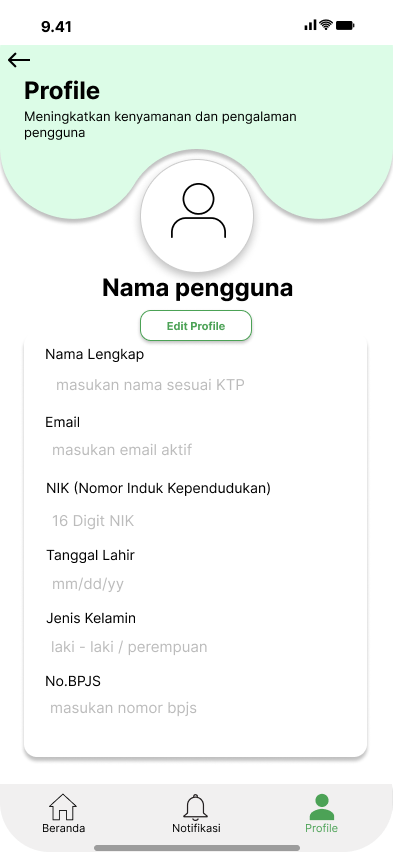

Aplikasi kesehatan digital yang membantu pengguna mengakses BPJS, konsultasi dokter, antrean rumah sakit, dan layanan kesehatan dalam satu platform.




Metode design thinking digunakan untuk memahami permasalahan pengguna hingga menghasilkan solusi yang tepat dan mudah digunakan.
SehatKu merupakan aplikasi layanan kesehatan digital yang dirancang untuk membantu masyarakat mengakses layanan BPJS, konsultasi dokter, informasi kesehatan, serta manajemen antrean rumah sakit dalam satu platform.
SehatKu
UI/UX Designer
1 Semester
Figma, VS Code
SehatKu adalah aplikasi layanan kesehatan digital yang membantu pengguna mengakses BPJS, antrean rumah sakit, konsultasi dokter, dan layanan kesehatan lainnya.
Melalui observasi dan analisis kebutuhan pengguna, ditemukan bahwa banyak masyarakat mengalami kesulitan mengakses berbagai layanan kesehatan karena tersebar di banyak platform yang berbeda.
Pengguna kesulitan mencari informasi BPJS dan mengelola data kepesertaan.
Pasien harus datang langsung ke rumah sakit untuk mengambil nomor antrean.
Layanan kesehatan berada di berbagai aplikasi yang berbeda.
Usia: 35 Tahun
Pekerjaan: Karyawan Swasta
Lokasi: Madiun
Bagaimana merancang aplikasi kesehatan digital yang mampu mengintegrasikan layanan BPJS, konsultasi dokter, antrean rumah sakit, dan layanan darurat dalam satu platform yang mudah digunakan oleh masyarakat?
Berdasarkan hasil analisis pada tahap Empathize, ditemukan beberapa permasalahan utama yang dialami pengguna.
Layanan kesehatan tersebar pada banyak aplikasi sehingga pengguna kesulitan mengakses informasi.
Menyediakan platform kesehatan terpadu yang mudah digunakan oleh masyarakat.
Menggabungkan layanan BPJS, antrean rumah sakit, konsultasi dokter, dan layanan darurat dalam satu aplikasi.
Tahap eksplorasi ide solusi mulai dari brainstorming hingga wireframe awal aplikasi.
Prototype dibuat menggunakan Figma dengan pendekatan high fidelity sehingga pengguna dapat merasakan pengalaman penggunaan aplikasi secara realistis.
Pengujian dilakukan untuk memastikan aplikasi mudah digunakan dan memenuhi kebutuhan pengguna.
Melalui proses design thinking mulai dari empathize, define, ideate, prototype hingga testing, SehatKu berhasil dirancang sebagai solusi kesehatan digital yang mempermudah pengguna dalam mengakses berbagai layanan kesehatan secara cepat, mudah dan terintegrasi.